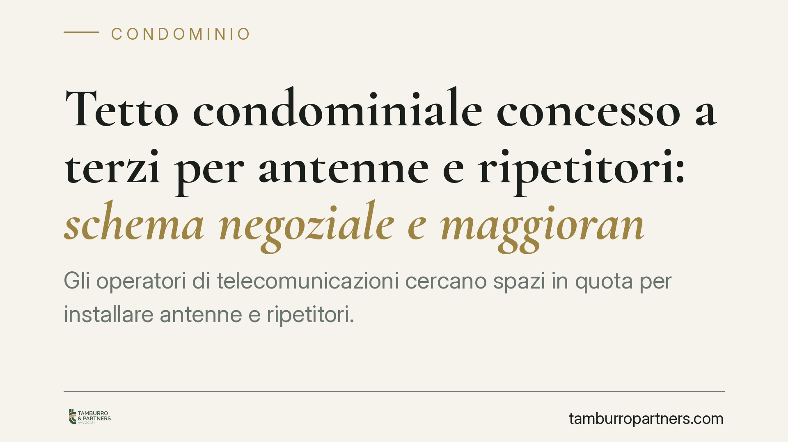

Tetto condominiale concesso a terzi per antenne e ripetitori: schema negoziale e maggioranze
Gli operatori di telecomunicazioni cercano spazi in quota per installare antenne e ripetitori. Il lastrico solare condominiale è uno spazio appetibile, ma concederlo a un terzo richiede uno schema contrattuale corretto e una maggioranza adeguata. Sbagliare l'inquadramento espone la delibera all'impugnazione e il condominio a contenziosi evitabili.

Il nodo: quale contratto e quale maggioranza
Una società di telecomunicazioni propone al condominio di installare un ripetitore sul tetto, offrendo un canone periodico. La domanda preliminare non è «quanto», ma «come»: il tipo di contratto scelto determina la maggioranza necessaria in assemblea e la natura del diritto che il terzo acquista sul bene comune.
Il lastrico solare rientra tra le parti comuni dell'edificio ai sensi dell'art. 1117 c.c. La sua concessione a un soggetto esterno è una decisione sulla cosa comune: va quindi assunta con le forme e i quorum previsti dalla disciplina condominiale e comproprietaria.
Locazione o concessione ad aedificandum
I due schemi tipici non sono intercambiabili.
Nella locazione, il condominio concede il godimento della superficie per collocarvi l'impianto, dietro canone. L'impianto resta di proprietà dell'operatore, ma il rapporto segue la disciplina della locazione. Attenzione alla durata: la locazione ultranovennale non è un ordinario atto di godimento. L'art. 1572 c.c. la assoggetta a trascrizione e la tradizione interpretativa la colloca tra gli atti eccedenti l'ordinaria amministrazione, per l'incidenza duratura che produce sul bene. Occorre dunque valutarla con cautela sul piano dei poteri gestori.
Nella concessione ad aedificandum, il condominio attribuisce al terzo il diritto di costruire e mantenere un manufatto sul lastrico, in deroga al principio di accessione dell'art. 934 c.c. Per quel principio, ciò che è stabilmente incorporato al suolo (o alla superficie) appartiene al proprietario del suolo; la concessione ad aedificandum crea invece una situazione di proprietà separata o superficiaria a favore del terzo. È uno schema più incisivo, perché incide sulla titolarità e non sul solo godimento.
Le maggioranze: dove si gioca la validità
La scelta dello schema si riflette sul quorum.
Per gli atti dispositivi o di innovazione sulla cosa comune il riferimento è duplice: l'art. 1108 c.c., dettato per la comunione, richiede maggioranze qualificate per gli atti eccedenti l'ordinaria amministrazione e, per le alienazioni o costituzione di diritti reali, il consenso di tutti i partecipanti; in ambito condominiale operano i quorum dell'art. 1136 c.c., differenziati per le innovazioni e per le decisioni di maggiore impatto.
La regola operativa è questa: più il contratto incide stabilmente sul bene e sui diritti dei condomini, più alta è la maggioranza richiesta. Una concessione ad aedificandum, che costituisce un diritto in capo al terzo, si avvicina al regime degli atti di straordinaria amministrazione e, nei casi di maggiore incidenza, può richiedere l'unanimità. Una locazione di durata contenuta può invece restare nella gestione a maggioranza. L'inquadramento va fatto caso per caso, verificando durata, natura del diritto concesso e impatto sulle parti comuni.
Si segnala, per completezza, che l'art. 1122-bis c.c. non governa questa fattispecie. Quella norma disciplina gli impianti non centralizzati di ricezione radiotelevisiva e di produzione di energia da fonti rinnovabili destinati al servizio di singole unità immobiliari. L'antenna di un operatore telecom installata per la sua attività è impianto di un terzo, non al servizio dei condomini: applicarvi l'art. 1122-bis sarebbe un errore di perimetro.
Cosa cambia per condominio e amministratore
Una delibera che adotti lo schema sbagliato, o che approvi con quorum insufficiente un atto che ne richiedeva uno superiore, è esposta all'impugnazione. Il condomino assente o dissenziente può impugnarla ai sensi dell'art. 1137 c.c., nel termine di trenta giorni dalla deliberazione (per i dissenzienti e astenuti) o dalla comunicazione del verbale (per gli assenti). Un contratto fondato su una delibera annullata è un contratto fragile, con il rischio di responsabilità verso il terzo contraente.
Cosa fare in concreto
- Qualificate il contratto prima di deliberare. Individuate se si tratta di locazione o concessione ad aedificandum e, nella locazione, verificate la durata rispetto alla soglia ultranovennale.
- Determinate il quorum corretto alla luce degli artt. 1108 e 1136 c.c., commisurandolo all'incidenza dell'atto sulla cosa comune.
- Verbalizzate con precisione l'oggetto, la durata, il canone e lo schema negoziale scelto, così da rendere trasparente la decisione ai condomini.
- Informate per tempo gli assenti, assicurando una comunicazione del verbale regolare: riduce il rischio di impugnazioni tardive ma legittime.
- Fatevi assistere nella redazione del contratto con il terzo, curando la coerenza tra delibera e testo negoziale.
Disclaimer
Contributo informativo a cura di Tamburro & Partners - Avv. Giuseppe Tamburro. Non costituisce parere legale.
Ogni condominio ha una storia a sé.
Se gestisci un'amministrazione e vuoi un confronto su una specifica questione condominiale, scrivi allo studio. Ti rispondiamo entro un giorno lavorativo.